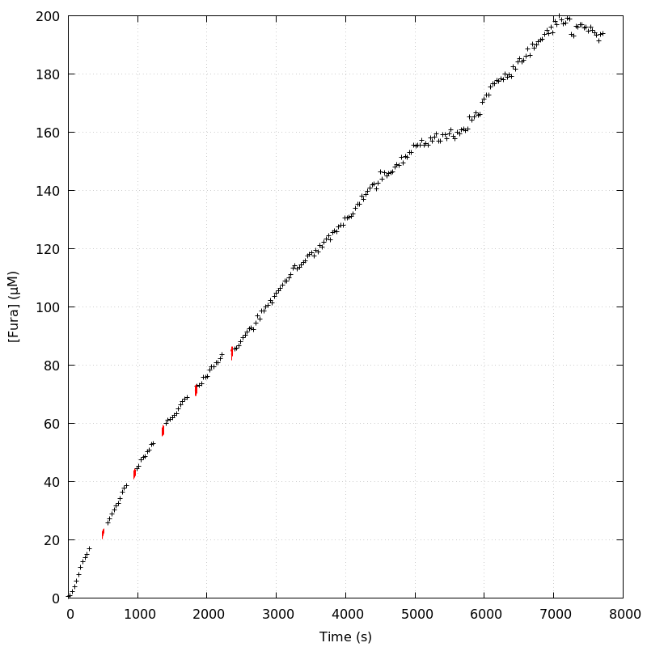
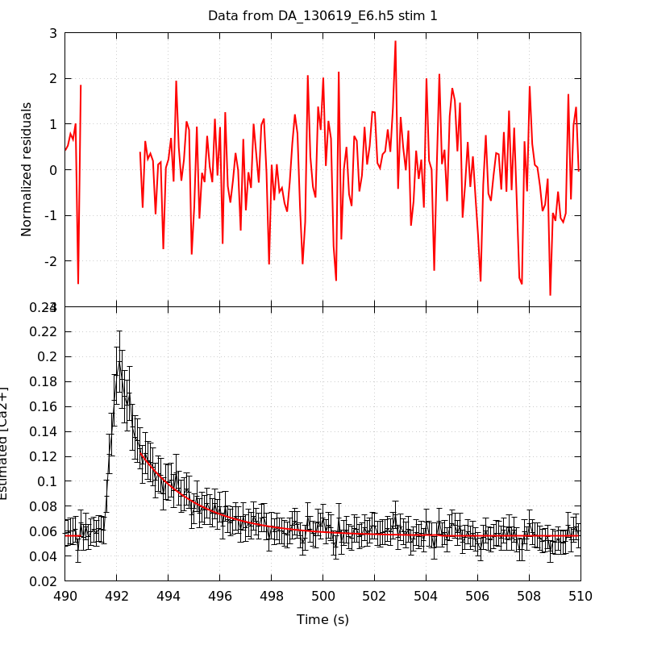
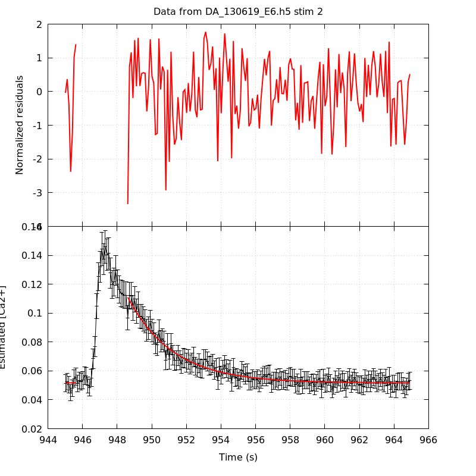
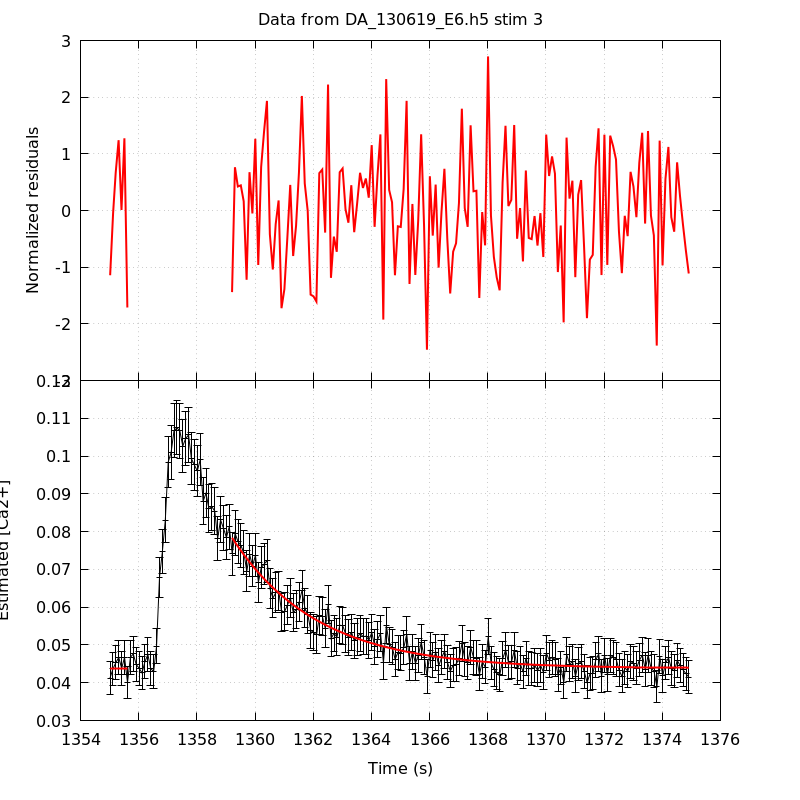
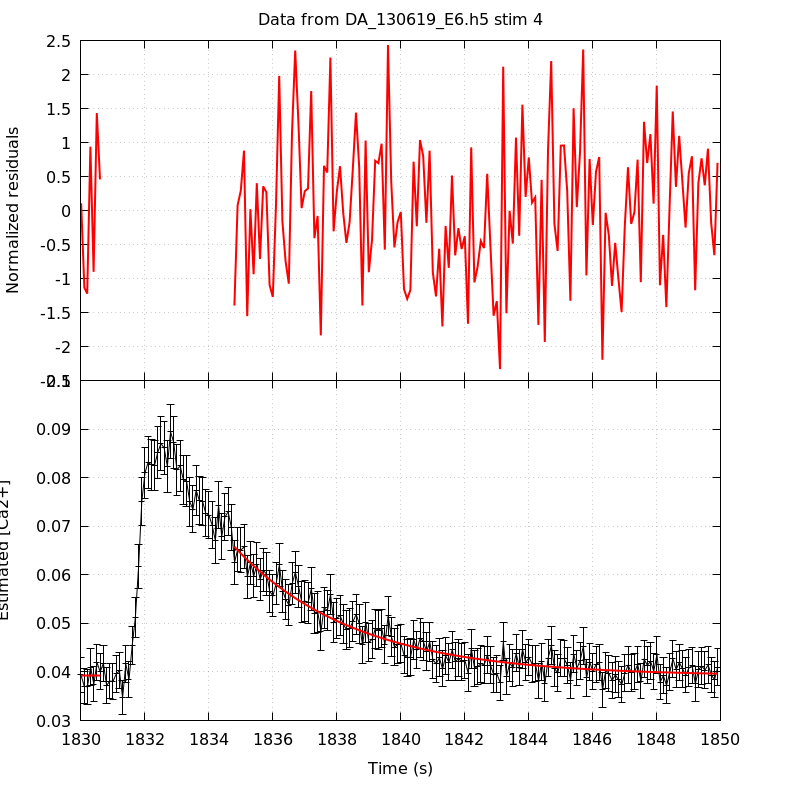
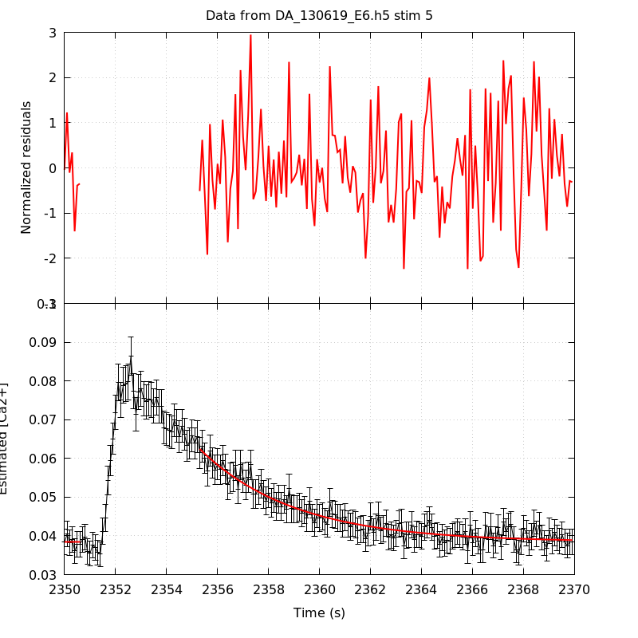
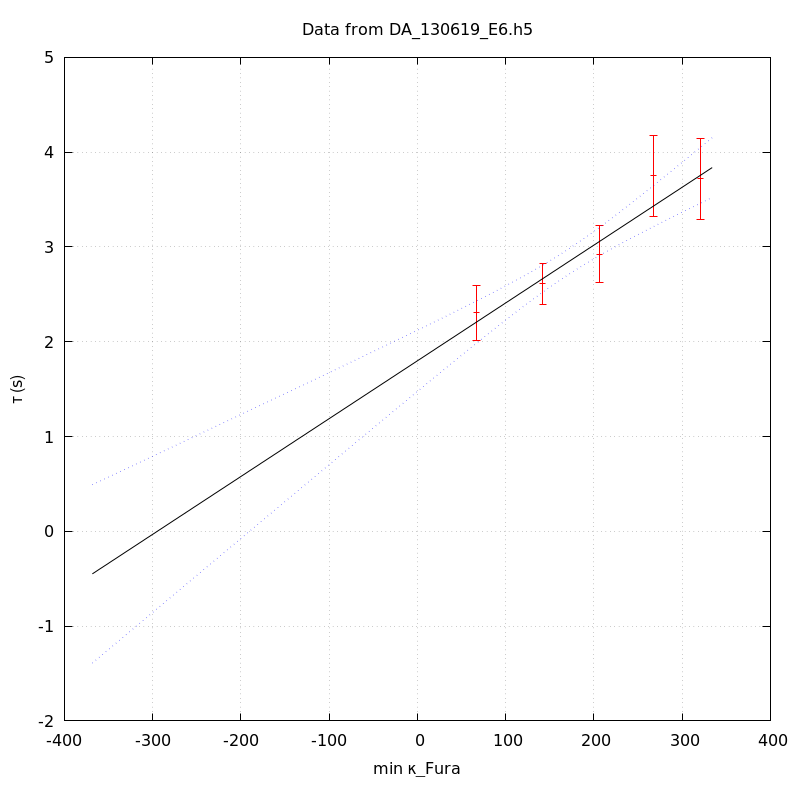
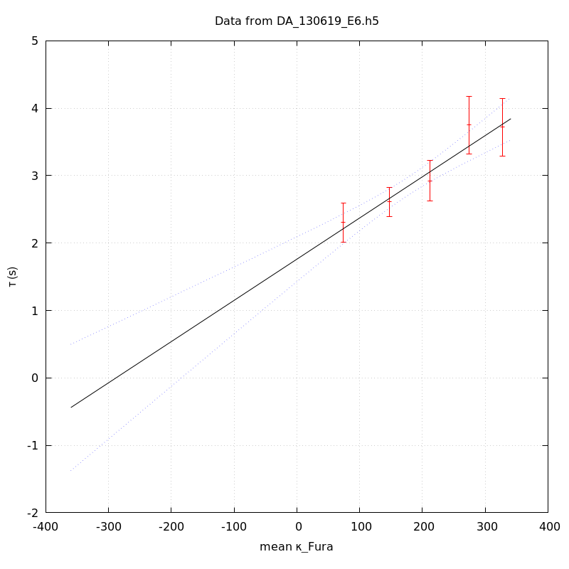
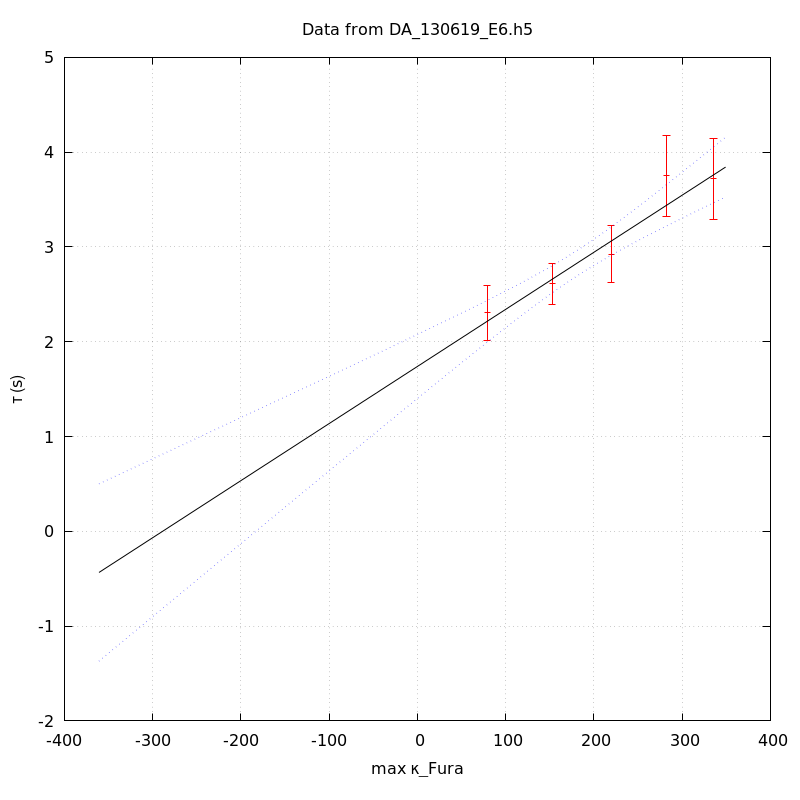

The baseline length is: 7.
When fitting tau against kappa_Fura only the transients for which the fit RSS and the lag 1 auto-correlation of the residuals were small enough, giving an overall probability of false negative of 0.02, were kept (see the numerical summary associated with each transient).
The good transients are: 1, 2, 3, 4, 5.
The time at which the 'good' transients were recorded appear in red.

On each graph, the residuals appear on top. Under the null hypothesis, if the monoexponential fit is correct they should be centered on 0 and have a SD close to 1 (not exactly 1 since parameters were obtained through the fitting procedure form the data.
The estimated [Ca2+] appears on the second row. The estimate is show in black together with pointwise 95% confidence intervals. The fitted curve appears in red. The whole transient is not fitted, only a portion of it is: a portion of the baseline made of 7 points and the decay phase starting at the time where the Delta[Ca2+] has reached 50% of its peak value.
The time appearing on the abscissa is the time from the beginning of the experiment.
Transient 1 is 'good'.

nobs = 178
number of degrees of freedom = 175
baseline length = 7
fit started from point 29
estimated baseline 0.0561638 and standard error 0.000551898
estimated delta 0.0667045 and standard error 0.00294167
estimated tau 2.30425 and standard error 0.14914
residual sum of squares: 188.851
RSS per degree of freedom: 1.07915
Probability of observing a larger of equal RSS per DOF under the null hypothesis: 0.224488
Lag 1 residuals auto-correlation: 0.071
Pr[Lag 1 auto-corr. > 0.071] = 0.154
Transient 2 is 'good'.

nobs = 171
number of degrees of freedom = 168
baseline length = 7
fit started from point 36
estimated baseline 0.051592 and standard error 0.000367325
estimated delta 0.0593503 and standard error 0.00157842
estimated tau 2.61376 and standard error 0.110116
residual sum of squares: 157.746
RSS per degree of freedom: 0.938962
Probability of observing a larger of equal RSS per DOF under the null hypothesis: 0.703556
Lag 1 residuals auto-correlation: -0.022
Pr[Lag 1 auto-corr. > -0.022] = 0.575
Transient 3 is 'good'.

nobs = 165
number of degrees of freedom = 162
baseline length = 7
fit started from point 42
estimated baseline 0.0437799 and standard error 0.000314362
estimated delta 0.034598 and standard error 0.00100593
estimated tau 2.92173 and standard error 0.153886
residual sum of squares: 161.979
RSS per degree of freedom: 0.999873
Probability of observing a larger of equal RSS per DOF under the null hypothesis: 0.485679
Lag 1 residuals auto-correlation: -0.024
Pr[Lag 1 auto-corr. > -0.024] = 0.601
Transient 4 is 'good'.

nobs = 159
number of degrees of freedom = 156
baseline length = 7
fit started from point 48
estimated baseline 0.0391716 and standard error 0.000343162
estimated delta 0.0266107 and standard error 0.000710596
estimated tau 3.75184 and standard error 0.218371
residual sum of squares: 160.684
RSS per degree of freedom: 1.03002
Probability of observing a larger of equal RSS per DOF under the null hypothesis: 0.382003
Lag 1 residuals auto-correlation: -0.015
Pr[Lag 1 auto-corr. > -0.015] = 0.526
Transient 5 is 'good'.

nobs = 154
number of degrees of freedom = 151
baseline length = 7
fit started from point 53
estimated baseline 0.0384446 and standard error 0.000315947
estimated delta 0.0240136 and standard error 0.000630452
estimated tau 3.71715 and standard error 0.216038
residual sum of squares: 175.698
RSS per degree of freedom: 1.16356
Probability of observing a larger of equal RSS per DOF under the null hypothesis: 0.0825293
Lag 1 residuals auto-correlation: 0.009
Pr[Lag 1 auto-corr. > 0.009] = 0.446
Since the [Fura] changes during a transient (and it can change a lot during the early transients), the unique value to use as '[Fura]' is not obvious. We therefore perform 3 fits: one using the minimal value, one using the mean and one using the maximal value.
The observed tau (shown in red) are displayed with a 95% confidence interval that results from the fitting procedure and is therefore meaningful only if the fit is correct!
No serious attempt at quantifying the precision of [Fura] and therefore kappa_Fura has been made since the choice of which [Fura] to use has a larger effect and since the other dominating effect is often the certainty we can have that the saturating value (the [Fura] in the pipette) has been reached.
The straight line in black is the result of a weighted linear regression. The blue dotted lines correspond to the limits of pointwise 95% confidence intervals.

Best fit: tau = 1.7996 + 0.00610216 kappa_Fura
Covariance matrix:
[ +2.71228e-02, -1.32247e-04
-1.32247e-04, +7.80532e-07 ]
Total sum of squares (TSS) = 51.3195
chisq (Residual sum of squares, RSS) = 3.61306
Probability of observing a larger of equal RSS per DOF under the null hypothesis: 0.306391
R squared (1-RSS/TSS) = 0.929597
Estimated gamma/v with standard error: 163.876 +/- 23.7262
Estimates kappa_S with standard error (using error propagation): 293.912 +/- 50.5122
kappa_S confidence intervals based on parametric bootstrap
0.95 CI for kappa_S: [188.685,481.147]
0.99 CI for kappa_S: [160.77,573.101]

Best fit: tau = 1.76168 + 0.00611072 kappa_Fura
Covariance matrix:
[ +2.87185e-02, -1.36846e-04
-1.36846e-04, +7.80190e-07 ]
Total sum of squares (TSS) = 51.3195
chisq (Residual sum of squares, RSS) = 3.45815
Probability of observing a larger of equal RSS per DOF under the null hypothesis: 0.32623
R squared (1-RSS/TSS) = 0.932615
Estimated gamma/v with standard error: 163.647 +/- 23.6546
Estimates kappa_S with standard error (using error propagation): 287.293 +/- 50.0562
kappa_S confidence intervals based on parametric bootstrap
0.95 CI for kappa_S: [182.859,474.458]
0.99 CI for kappa_S: [161.901,572.425]

Best fit: tau = 1.73993 + 0.00602268 kappa_Fura
Covariance matrix:
[ +2.96856e-02, -1.37517e-04
-1.37517e-04, +7.57353e-07 ]
Total sum of squares (TSS) = 51.3195
chisq (Residual sum of squares, RSS) = 3.42547
Probability of observing a larger of equal RSS per DOF under the null hypothesis: 0.330557
R squared (1-RSS/TSS) = 0.933252
Estimated gamma/v with standard error: 166.039 +/- 23.9922
Estimates kappa_S with standard error (using error propagation): 287.896 +/- 50.6065
kappa_S confidence intervals based on parametric bootstrap
0.95 CI for kappa_S: [182.148,468.261]
0.99 CI for kappa_S: [158.17,559.214]
5 out of 5 transients were kept.
sigma(tau): 0.14914, 0.110116, 0.153886, 0.218371, 0.216038
Residual correlation at lag 1: 0.07109823025885532, -0.021740600513027585, -0.024139464757202578, -0.014722976784474815, 0.009096201076972404
Probablity of a correlation at lag 1 smaller or equal than observed: 0.15400000000000003, 0.575, 0.601, 0.526, 0.44599999999999995
RSS/DOF: 1.07915, 0.938962, 0.999873, 1.03002, 1.16356